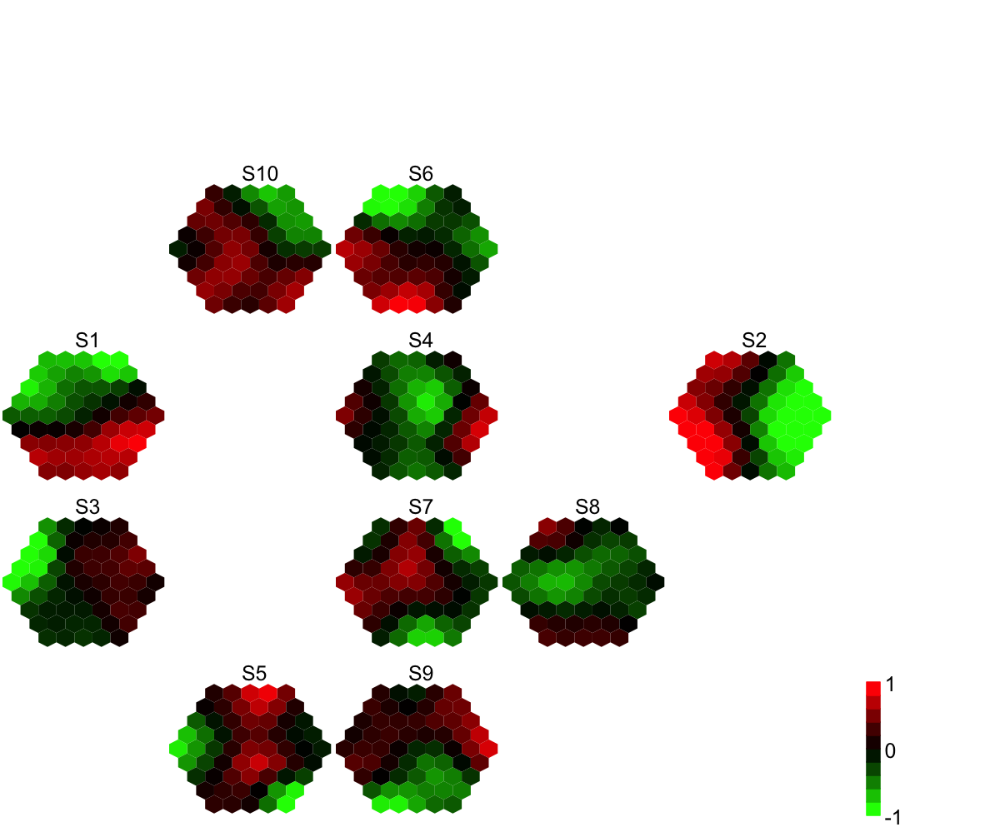

sCompReorder is supposed to reorder component
planes for the input map/data. It returns an object of
class "sReorder". It is realized by using a new map grid
(with sheet shape consisting of a rectangular lattice) to
train component plane vectors (either column-wise vectors
of codebook/data matrix or the covariance matrix
thereof). As a result, similar component planes are
placed closer to each other. It is highly recommend to
use trained map (i.e. codebook matrix) as input if data
matrix is hugely big to save computational costs.
sCompReorder(sMap, xdim = NULL, ydim = NULL, amplifier = NULL, metric = c("none",
"pearson", "spearman", "kendall", "euclidean", "manhattan", "cos", "mi"), init = c("linear",
"uniform", "sample"), algorithm = c("sequential", "batch"), alphaType = c("invert",
"linear", "power"), neighKernel = c("gaussian", "bubble", "cutgaussian", "ep",
"gamma"))
sDistance for
detailsan object of class "sReorder", a list with following components:
nHex: the total number
of rectanges in the grid xdim: x-dimension
of the grid ydim: y-dimension of the grid
uOrder: the unique order/placement for each
component plane that is reordered to the "sheet"-shape
grid with rectangular lattice coord: a
matrix of nHex x 2, with each row corresponding to the
coordinates of each "uOrder" rectangle in the 2D map
grid call: the call that produced this
result To ensure the unique placement, each component plane mapped to the "sheet"-shape grid with rectangular lattice is determinied iteratively in an order from the best matched to the next compromised one. If multiple compoments are hit in the same rectangular lattice, the worse one is always sacrificed by moving to the next best one till all components are placed somewhere exclusively on their own.
# 1) generate an iid normal random matrix of 100x10 data <- matrix( rnorm(100*10,mean=0,sd=1), nrow=100, ncol=10) colnames(data) <- paste(rep('S',10), seq(1:10), sep="") # 2) get trained using by default setup sMap <- sPipeline(data=data)Start at 2014-03-26 11:06:53 First, define topology of a map grid... Second, initialise the codebook matrix given a topology and input data... Third, get training at the rough stage... Fourth, get training at the finetune stage... Next, identify the best-matching hexagon/rectangle for the input data... Finally, append the response data (hits and mqe) into the sMap object... Below are the summaries of the training results: dimension of input data: 100x10 xy-dimension of map grid: xdim=9, ydim=9 grid lattice: hexa grid shape: suprahex dimension of grid coord: 61x2 initialisation method: linear dimension of codebook matrix: 61x10 mean quantization error: 4.92761300512866 Below are the details of trainology: training algorithm: batch alpha type: invert training neighborhood kernel: gaussian trainlength (x input data length): 7 at rough stage; 25 at finetune stage radius (at rough stage): from 3 to 1 radius (at finetune stage): from 1 to 1 End at 2014-03-26 11:06:53 Runtime in total is: 0 secs# 3) reorder component planes in different ways # 3a) directly using column-wise vectors of codebook matrix sReorder <- sCompReorder(sMap=sMap, amplifier=2, metric="none")Start at 2014-03-26 11:06:53 First, define topology of a map grid... Second, initialise the codebook matrix given a topology and input data... Third, get training at the rough stage... Fourth, get training at the finetune stage... Next, identify the best-matching hexagon/rectangle for the input data... Finally, append the response data (hits and mqe) into the sMap object... Below are the summaries of the training results: dimension of input data: 10x61 xy-dimension of map grid: xdim=5, ydim=4 grid lattice: rect grid shape: sheet dimension of grid coord: 20x2 initialisation method: linear dimension of codebook matrix: 20x61 mean quantization error: 5.50070826203008 Below are the details of trainology: training algorithm: sequential alpha type: invert training neighborhood kernel: gaussian trainlength (x input data length): 20 at rough stage; 80 at finetune stage radius (at rough stage): from 1 to 1 radius (at finetune stage): from 1 to 1 End at 2014-03-26 11:06:53 Runtime in total is: 0 secs# 3b) according to covariance matrix of pearson correlation of codebook matrix sReorder <- sCompReorder(sMap=sMap, amplifier=2, metric="pearson")Start at 2014-03-26 11:06:53 First, define topology of a map grid... Second, initialise the codebook matrix given a topology and input data... Third, get training at the rough stage... Fourth, get training at the finetune stage... Next, identify the best-matching hexagon/rectangle for the input data... Finally, append the response data (hits and mqe) into the sMap object... Below are the summaries of the training results: dimension of input data: 10x10 xy-dimension of map grid: xdim=5, ydim=4 grid lattice: rect grid shape: sheet dimension of grid coord: 20x2 initialisation method: linear dimension of codebook matrix: 20x10 mean quantization error: 0.548597803172487 Below are the details of trainology: training algorithm: sequential alpha type: invert training neighborhood kernel: gaussian trainlength (x input data length): 20 at rough stage; 80 at finetune stage radius (at rough stage): from 1 to 1 radius (at finetune stage): from 1 to 1 End at 2014-03-26 11:06:53 Runtime in total is: 0 secs# 3c) directly using column-wise vectors of input matrix sReorder <- sCompReorder(sMap=data, amplifier=2, metric="none")Start at 2014-03-26 11:06:53 First, define topology of a map grid... Second, initialise the codebook matrix given a topology and input data... Third, get training at the rough stage... Fourth, get training at the finetune stage... Next, identify the best-matching hexagon/rectangle for the input data... Finally, append the response data (hits and mqe) into the sMap object... Below are the summaries of the training results: dimension of input data: 10x100 xy-dimension of map grid: xdim=5, ydim=4 grid lattice: rect grid shape: sheet dimension of grid coord: 20x2 initialisation method: linear dimension of codebook matrix: 20x100 mean quantization error: 50.7901237418759 Below are the details of trainology: training algorithm: sequential alpha type: invert training neighborhood kernel: gaussian trainlength (x input data length): 20 at rough stage; 80 at finetune stage radius (at rough stage): from 1 to 1 radius (at finetune stage): from 1 to 1 End at 2014-03-26 11:06:54 Runtime in total is: 1 secs# 3d) according to covariance matrix of pearson correlation of input matrix sReorder <- sCompReorder(sMap=data, amplifier=2, metric="pearson")Start at 2014-03-26 11:06:54 First, define topology of a map grid... Second, initialise the codebook matrix given a topology and input data... Third, get training at the rough stage... Fourth, get training at the finetune stage... Next, identify the best-matching hexagon/rectangle for the input data... Finally, append the response data (hits and mqe) into the sMap object... Below are the summaries of the training results: dimension of input data: 10x10 xy-dimension of map grid: xdim=5, ydim=4 grid lattice: rect grid shape: sheet dimension of grid coord: 20x2 initialisation method: linear dimension of codebook matrix: 20x10 mean quantization error: 0.56538206631514 Below are the details of trainology: training algorithm: sequential alpha type: invert training neighborhood kernel: gaussian trainlength (x input data length): 20 at rough stage; 80 at finetune stage radius (at rough stage): from 1 to 1 radius (at finetune stage): from 1 to 1 End at 2014-03-26 11:06:54 Runtime in total is: 0 secs# 4) visualise multiple component planes reorded within a sheet-shape rectangle grid visCompReorder(sMap=sMap, sReorder=sReorder, margin=rep(0.1,4), height=7, title.rotate=0, title.xy=c(0.45, 1), colormap="gbr", ncolors=10, zlim=c(-1,1), border.color="transparent")
sTopology, sPipeline,
sBMH, sDistance,
visCompReorder
Fang H, Gough J. (2014) supraHex: an R/Bioconductor package for tabular omics data analysis using a supra-hexagonal map. Biochemical and Biophysical Research Communications, 443(1), 285-289. http://dx.doi.org/10.1016/j.bbrc.2013.11.103, PMID: 24309102
){kind=link}